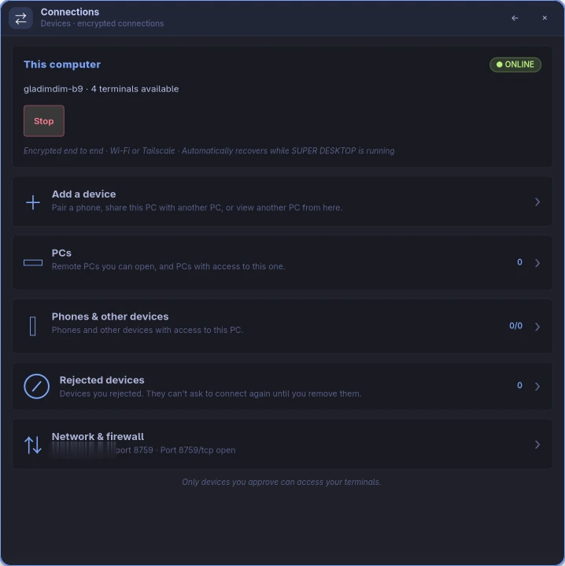
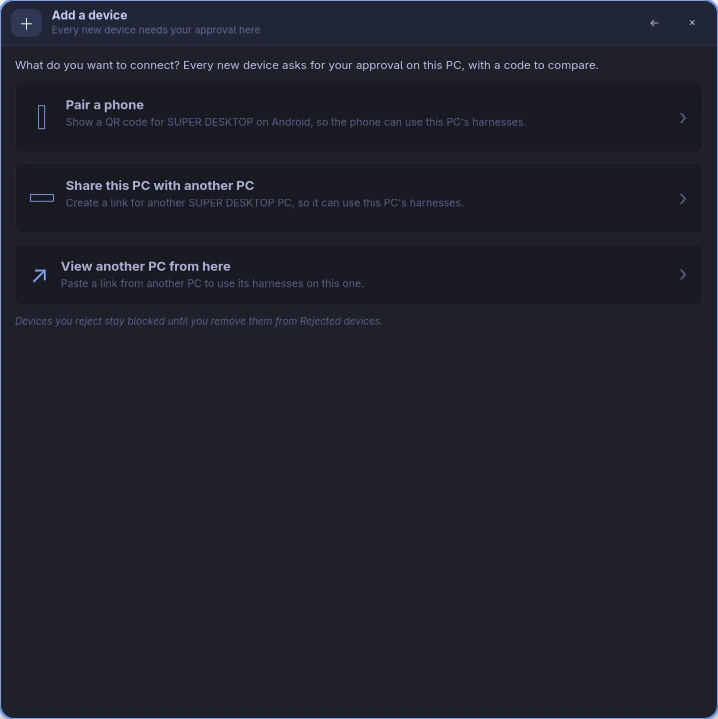
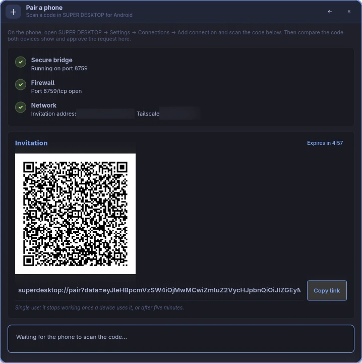
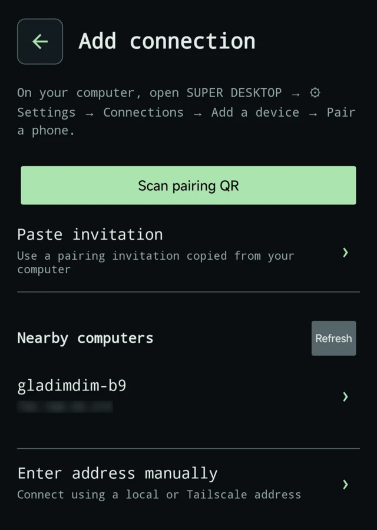
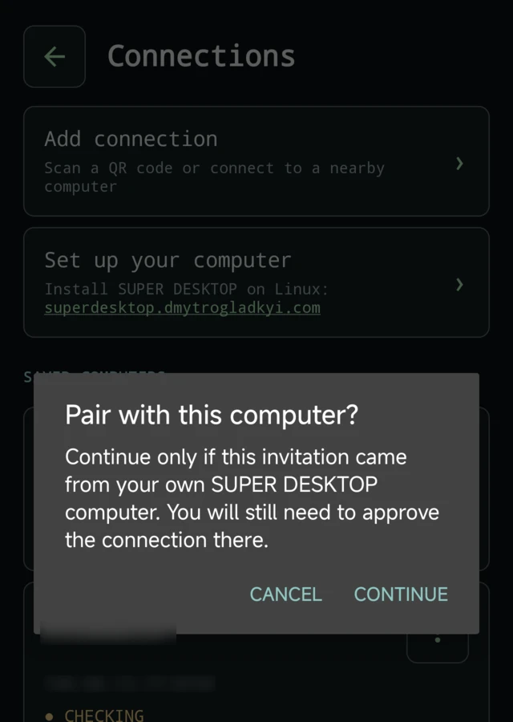
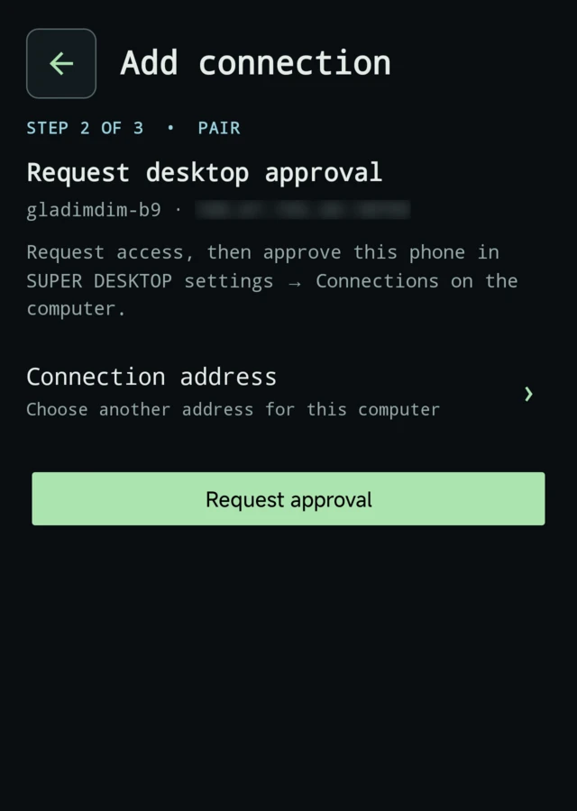
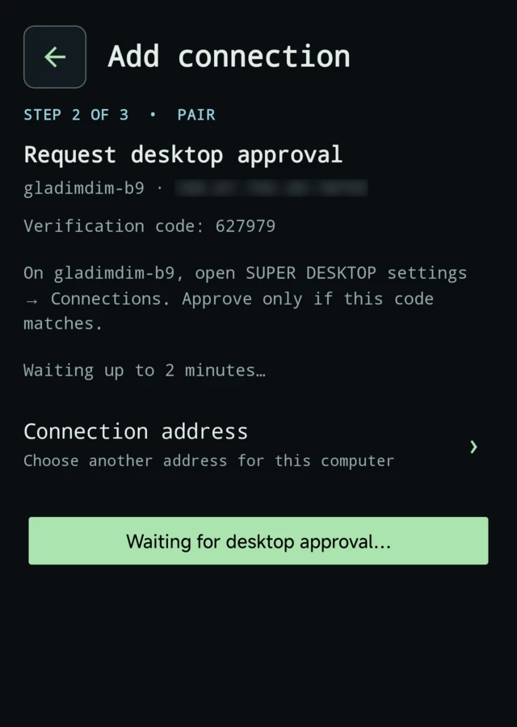
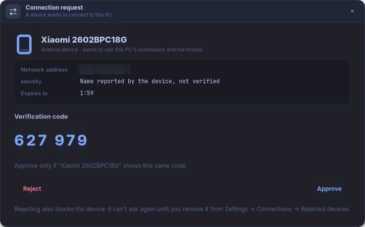
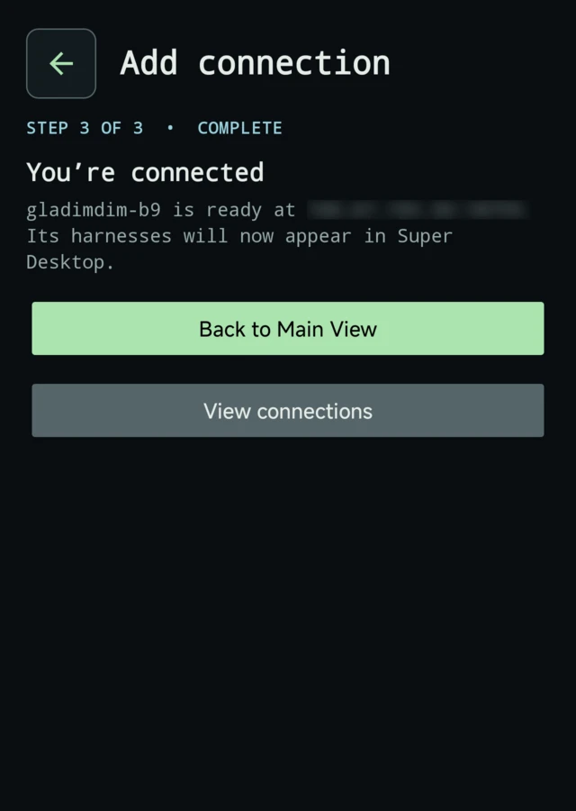
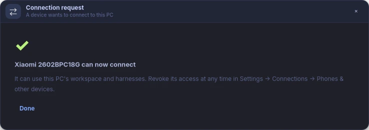

Before you start
🖥️ SUPER DESKTOP on your PC
Installed and running on your Omarchy / Hyprland PC. New here? Install it first.
📱 The app on your phone
The SUPER DESKTOP app for Android, installed on the phone you want to pair.
📶 One network
Phone and PC on the same Wi-Fi, or both signed in to the same Tailscale network.
Pair in five steps
Steps marked PC happen on your computer, Phone on your phone. Click any screenshot to see it full size.
PC Open a pairing invitation
- Press Super + Shift + Q to show SUPER DESKTOP, then click ⚙ Settings at the right of the top bar.
- Choose Connections, then Add a device, then Pair a phone.
- The page checks three things and shows a green tick for each: Secure bridge (it starts the encrypted connection point, port 8759), Firewall and Network. If the firewall check asks, press Allow and enter your password once; that opens port 8759/tcp.
- A QR code appears under Invitation. Keep this page open for the next step.
The invitation works once, for five minutes. If it runs out, press Create a new invitation.






Phone Scan the code
- Open the SUPER DESKTOP app. On a fresh install it opens Connections by itself; otherwise tap the Settings gear, then Connections.
- Tap Add connection, then Scan pairing QR, and point the camera at the code on your PC. Allow camera access if Android asks.
- The app asks Pair with this computer? Tap Continue: the invitation is from your own PC.
No camera handy? On the PC press Copy link, get the link to your phone, and choose Paste invitation instead. Nearby computers lists PCs on your Wi-Fi, and Enter address manually takes the address shown on the PC; both then ask for the invitation too, so the phone knows it is talking to your PC.




Phone Request approval
The app checks the connection and shows your PC's name and address under Step 2 of 3 · Pair. Tap Request approval.
The phone now shows a six-digit verification code and waits up to two minutes for your PC.




PC Compare the codes and approve
On the PC a Connection request panel opens with your phone's name and a verification code. If SUPER DESKTOP is hidden, a notification SUPER DESKTOP: connection request appears instead: click it, or press Review request on the Pair a phone page.
- The codes match (the PC groups the digits,
627 979; the phone shows627979)? Press Approve. - They don't, or you don't recognise the device? Press Reject. A rejected device is blocked and can't ask again until you remove it from Settings → Connections → Rejected devices.


Done
The phone says You’re connected. Tap Back to Main View: your PC's harnesses appear in the list, with live terminals you can read and type into. The PC is saved on the phone, so you never pair it again unless you remove it.




Away from home: Tailscale
Nearby discovery and the invitation's address work on your own Wi-Fi. To reach your PC from anywhere, use Tailscale.
- Install Tailscale on the PC and on the phone, and sign both in to the same network.
- Pair as above. The Pair a phone page shows the PC's Tailscale address next to its network address.
- On the phone, open Settings → Connections, tap your PC's menu and choose Addresses, then pick its Tailscale address, marked recommended.
Manage and revoke
On the PC
Settings → Connections → Phones & other devices lists every phone with access, whether it is active, and until when. Revoke cuts a phone off at once.
On the phone
Settings → Connections → your PC's menu: Check connection, Addresses, Pair again or Remove connection. Removing it on the phone does not revoke the phone on the PC; revoke it there.
Rejected by mistake?
Settings → Connections → Rejected devices on the PC: Remove the phone, then pair again.
Troubleshooting
The phone shows what went wrong under the pairing step. Find the message:
| The phone says | What to do |
|---|---|
No bridge answered at … | The phone can't reach the PC. Check both are on the same Wi-Fi (or Tailscale), that Settings → Connections shows This computer as online (press Start bridge if not), and that the Pair a phone page's Firewall check is green. |
Pairing failed: scan_fresh_desktop_pairing_qr | The invitation was already used or is older than five minutes. On the PC press Create a new invitation and scan again. |
Pairing failed: Approval expired. Request access again. | Nobody approved within two minutes. Tap Request approval again and approve on the PC. |
Pairing failed: The computer denied this request. | The request was rejected on the PC. Remove the phone from Rejected devices there, then pair again. |
Pairing failed: pairing_blocked | This phone was rejected earlier. On the PC: Settings → Connections → Rejected devices → Remove. |
Pairing failed: pairing_request_already_pending_or_rate_limited | A request from this phone is still waiting or was just decided. Wait two minutes, then request again. |
Pairing failed: Update SUPER DESKTOP on the computer for secure pairing. | The PC runs an old version. Update it in Settings → Updates, then pair. |
| Nearby computers finds nothing | Discovery needs the same Wi-Fi and may be blocked on guest or office networks. Use Scan pairing QR, or Enter address manually with the address the PC shows under Network. |